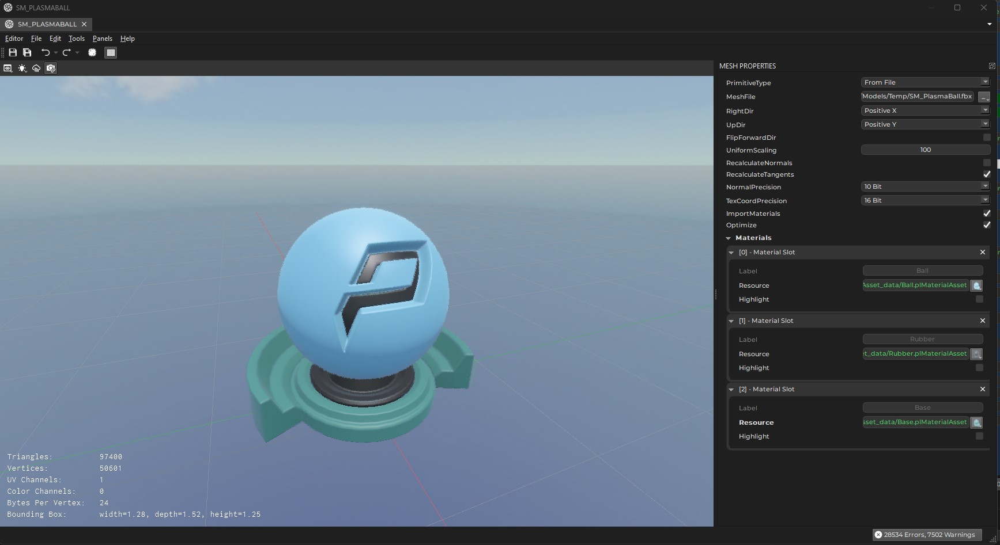

Mesh Asset
A mesh asset represents a mesh that can be used for rendering. In the most common case the mesh asset imports the mesh data from an external file, such as an FBX file. However, it also supports generating the mesh data for common shapes (spheres, cylinders, ...) procedurally. Mesh assets are typically added to a scene with a mesh component.

The left hand side of the asset document shows a 3D preview of the mesh. The viewport allows to switch the render mode to inspect the mesh normals, UV coordinates and so on.
On the right hand side the asset properties specify how to import or generate the mesh data.
Important:
The mesh asset does not automatically update when you edit its properties. Instead you need to transform the asset (
Ctrl+Eor with the rightmost button in the toolbar).
Asset Properties
-
PrimitiveType: This selects how the mesh data is generated. IfFrom Fileis chosen, you need to also specify theMeshFileproperty. If you choose a procedural method, other configuration options appear. -
ForwardDir,RightDir,UpDir: With these you can change which axis is considered forward, right and up in the mesh data. For mesh data from FBX files, this information is typically embedded in the file. For other file types, you may need to adjust these to make the imported data appear correctly upright. -
UniformScaling: Adjusts the size of the mesh, for example to convert a mesh from centimeter to meter scale. -
RecalculateNormals,RecalculateTangents: If enabled, information about normals or tangents in the mesh file is ignored, and is instead computed from the vertex data. -
NormalPrecision,TexCoordPrecision: These options allow you to choose how precise normals and UV coordinates are represented. Leave these at the default, unless you notice precision issues. Higher precision means the mesh takes up more RAM on the GPU and is slightly slower to render. -
ImportMaterials: If enabled, the mesh import automatically generates material assets for the materials that the mesh file specifies. It also tries to populate those materials with sensible values and if possible also creates texture assets. Unfortunately this rarely works perfectly, and typically requires you to fix the generated assets afterwards.
Note:
Materials are only generated when the mesh has no materials set yet. After the initial creation of these other assets, you usually need to transform the mesh a second time to make them properly show up.
Materials: The list of materials to use. The mesh may have multiple sub-meshes, and each sub-mesh uses a different material slot. Mesh components can override which material is used for which slot.
Procedural Mesh Generation
Through the PrimitiveType option you can choose to create a mesh procedurally. In this case object specific options appear. Note that by default objects use a detail level of 0 which means that the editor will pick a decent value, depending on the chosen primitive type.
Be aware that some detail values seemingly have no effect. For instance, for cones, capsules and cylinders the detail represents the number of subdivisions along the circumference, and therefore can't be lower than 3. Therefore the values 1, 2 and 3 all produce the same result.